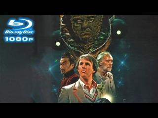
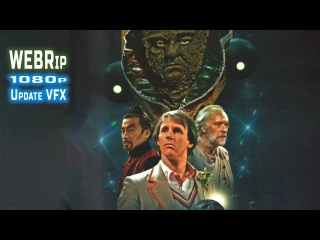
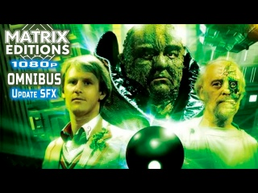
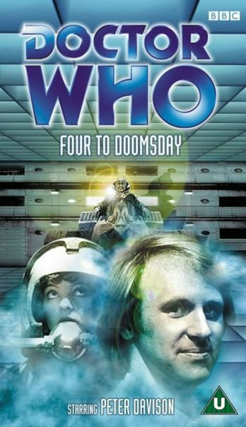
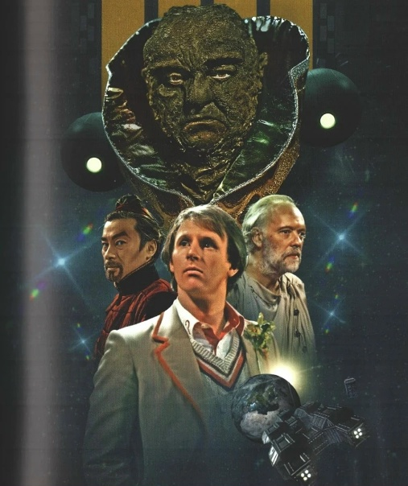
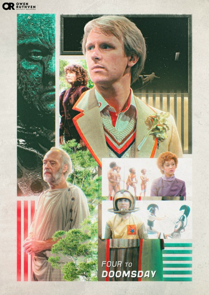
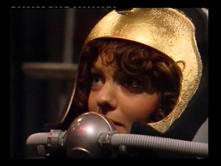

Субтитры: Русские и Английские |  |
|---|---|
с фанатским обновлением визуальных эффектов (cunningmunki) Субтитры: Русские и Английские |  |
с обновлением визуальных эффектов (cunningmunki) Субтитры: отсутствуют |  |
Four to Doomsday
Дата выхода: 18-26 января 1982
Формат: 4 эпизода по 25 мин.
| | |
ТАРДИС материализуется на борту огромного звездолёта, направляющегося к Земле. Кораблём управляет Монарх — правитель планеты Урбанка, внешне похожий на гигантскую лягушку. На борту четыре земные культуры, похищенные в разные эпохи: древние греки, китайцы, майя и аборигены Австралии. Монарх уверяет, что несёт мир, но его намерения явно не так невинны, а Адрик, как обычно, проявляет излишнюю доверчивость. Хотя «Кастровальва» вышла первой, именно эта серия была снята раньше — потому что изначальный сценарий для дебюта Дэвисона отменили за месяц до съёмок. А Ниссу чуть не вывели из сериала прямо здесь: следующий сценарий был написан без неё, и лишь вмешательство Дэвисона спасло героиню — поэтому в финале она падает в обморок, чтобы объяснить её отсутствие в следующей серии.
 VHS - сентябрь 2001 |  DVD - 15 сентября 2008 |  Blu-ray - 10 декабря 2018 * Версия в нашей группе |
|---|


